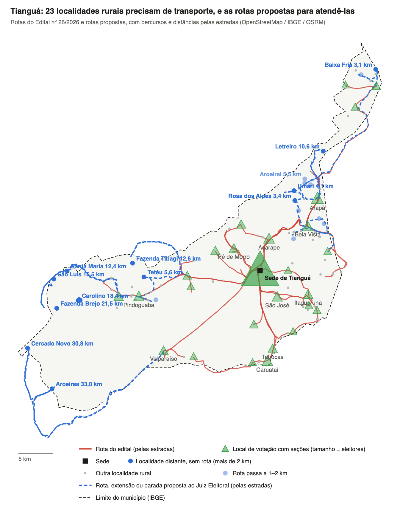

Transporte de Eleitores – Tianguá (81ª ZE): proposta de novas rotas
16/10/2026
Resumo
Propomos ao Juiz Eleitoral da 81ª Zona 3 rotas novas, 2 extensões e paradas extras no transporte gratuito de Tianguá. Traçamos pelas estradas o percurso das 20 rotas do Edital nº 26/2026. Quatorze localidades rurais distantes ficam a mais de 2 km do caminho de qualquer veículo, e outras nove ficam a 1–2 km.
- Tianguá tem 59.736 eleitores aptos em 57 locais de votação e 232 seções. São 32 locais rurais, com 21.743 eleitores (36% do total).
- 12 locais rurais ficam a 15 km ou mais da sede, com 7.460 eleitores. Os mais distantes são Tabainha e Santo Izídio (42,8 km) e Carnaubinha (39,0 km).
- Sem rota (mais de 2 km do percurso): Aroeiras e Cercado Novo, no sertão sudoeste, a 31–33 km de um local de votação. Também Fazenda Brejo, Carolino, São Luís, Santa Maria, Fazenda Bananal, Bananal Velho, Fazenda Tibagi, Tetéu, Letreiro, Umari, Rosa dos Alpes e Baixa Fria.
- Rota passa perto (1–2 km): Melosal, Aroeiral, Caraúbas, Muquém, Pendurado, Campo do Meio, Vazante, Fazenda Paraíso e Piçarreira.
- Todas as rotas do edital são mantidas. As propostas só acrescentam percurso.
Como a carência foi calculada
Uma localidade tem carência quando fica longe do local de votação e longe do percurso dos veículos do edital. O cálculo seguiu quatro passos:
- Localidades: usamos as 99 localidades rurais de Tianguá que estão no OpenStreetMap e na base Localidades do Brasil 2022, do IBGE.
- Locais de votação: o TRE-CE não publica coordenadas. Cada local foi posto no ponto do sítio ou distrito do seu endereço, e os urbanos no centro da sede. Cinco locais não foram encontrados em nenhuma das duas bases: Croatá, Córrego, Cajuaçu, Araticum e Assentamento Nova Esperança, com 4.334 eleitores. O Sítio São José foi posto pelo Riacho São José, em posição aproximada.
- Distância ao local de votação: calculamos a distância por estrada (OSRM) de cada localidade até o local de votação mais próximo. Analisamos as que ficam a mais de 3 km.
- Distância ao veículo: traçamos cada rota do edital pelas estradas, passando pelas paradas localizadas, e medimos a distância da localidade até o percurso mais próximo. Se a localidade aparece pelo nome como parada no edital, ela conta como atendida, mesmo sem o traçado.
| Localidade | Até o local de votação (km, estrada) | Rota mais próxima | Até o percurso da rota (km) | Situação |
|---|---|---|---|---|
| Aroeiras | 33,0 | Rota 04 | 16,3 | Sem rota (mais de 2 km) |
| Cercado Novo | 30,8 | Rota 04 | 14,4 | Sem rota (mais de 2 km) |
| Fazenda Brejo | 21,5 | Rota 04 | 7,7 | Sem rota (mais de 2 km) |
| Carolino | 18,4 | Rota 04 | 4,4 | Sem rota (mais de 2 km) |
| São Luís | 15,5 | Rota 04 | 7,1 | Sem rota (mais de 2 km) |
| Fazenda Tibagi | 12,6 | Rota 04 | 3,7 | Sem rota (mais de 2 km) |
| Santa Maria | 12,4 | Rota 04 | 5,4 | Sem rota (mais de 2 km) |
| Letreiro | 10,6 | Rota 01 | 2,3 | Sem rota (mais de 2 km) |
| Santa Rosa | 9,1 | Rota 02 | 0,7 | Atendida (até 1 km da rota) |
| Fazenda Bananal | 7,8 | Rota 04 | 4,2 | Sem rota (mais de 2 km) |
| Bananal Velho | 7,8 | Rota 04 | 4,2 | Sem rota (mais de 2 km) |
| Tipizal | 7,5 | Rota 02 | 0,0 | Atendida (até 1 km da rota) |
| Olho d’Água da Frecheira | 6,4 | Rota 02 | 0,4 | Atendida (até 1 km da rota) |
| Melosal | 5,8 | Rota 07 | 1,7 | Rota passa perto (1–2 km) |
| Tetéu | 5,6 | Rota 03 | 2,4 | Sem rota (mais de 2 km) |
| Aroeiral | 5,5 | Rota 07 | 1,0 | Rota passa perto (1–2 km) |
| Caraúbas | 5,3 | Rota 01 | 1,2 | Rota passa perto (1–2 km) |
| Muquém | 5,0 | Rota 02 | 1,3 | Rota passa perto (1–2 km) |
| São Vicente | 4,8 | Rota 07 | 0,0 | Atendida (até 1 km da rota) |
| Remissão | 4,6 | Rota 05 | 0,0 | Atendida (até 1 km da rota) |
| Agrovila Bom Jesus / São João | 4,2 | Rota 03 | 0,3 | Atendida (até 1 km da rota) |
| Umari | 4,1 | Rota 07 | 3,3 | Sem rota (mais de 2 km) |
| Pendurado | 4,1 | Rota 07 | 1,5 | Rota passa perto (1–2 km) |
| São José dos Coelhos | 3,9 | Rota 04 | 0,0 | Atendida (até 1 km da rota) |
| Campo do Meio | 3,9 | Rota 07 | 1,2 | Rota passa perto (1–2 km) |
| Morada Nova | 3,7 | Rota 03 | 0,1 | Atendida (até 1 km da rota) |
| Itraquaçu | 3,7 | Rota 02 | 0,4 | Atendida (até 1 km da rota) |
| Pindoba | 3,5 | Rota 07 | 0,5 | Atendida (até 1 km da rota) |
| Rosa dos Alpes | 3,4 | Rota 07 | 2,7 | Sem rota (mais de 2 km) |
| Vazante | 3,2 | Rota 01 | 1,9 | Rota passa perto (1–2 km) |
| Fazenda Paraíso | 3,1 | Rota 04 | 1,2 | Rota passa perto (1–2 km) |
| Baixa Fria | 3,1 | Rota 01 | 2,4 | Sem rota (mais de 2 km) |
| Piçarreira | 3,1 | Rota 01 | 1,5 | Rota passa perto (1–2 km) |
| Janeiro | 3,1 | Rota 14 | 1,0 | Atendida (até 1 km da rota) |
29 das 89 paradas do edital não estão em nenhuma das duas bases e ficaram fora do traçado. Entre elas estão todas as paradas rurais da Rota 08 (Croatá, Pitanguinha) e da Rota 13 (Paraíba, Boa Esperança, Santa Rita), e por isso esses dois percursos não aparecem no mapa. A Rota 16 aparece só a partir de Palmeira Comprida, porque Araticum também não foi localizado. O Sítio Palmeira Comprida e o Sítio Prainha foram postos em posição aproximada, pelo rio e pelo ponto de mesmo nome. O percurso real pode passar por mais localidades do que o traçado mostra.
Mapa e localidades rurais
O mapa mostra 99 localidades rurais de Tianguá e o percurso das rotas do edital. As que mais precisam de transporte ficam em dois grupos. O primeiro é o sertão oeste e sudoeste, depois de Pindoguaba e Tucuns. O segundo é o norte, entre Arapá e Tabainha.

As localidades estão agrupadas pela distância, por estrada, até o local de votação mais próximo:
- Mais de 5 km (17): Aroeiras, Cercado Novo, Fazenda Brejo, Carolino, São Luís, Fazenda Tibagi, Santa Maria, Letreiro, Santa Rosa (Rota 02), Fazenda Bananal, Bananal Velho, Tipizal (Rota 02), Olho d’Água da Frecheira (Rota 02), Melosal, Tetéu, Aroeiral e Caraúbas.
- De 3 a 5 km (17): Muquém, São Vicente (Rota 07), Remissão (Rota 05), Agrovila Bom Jesus / São João (Rota 03), Umari, Pendurado, São José dos Coelhos (Rota 04), Campo do Meio, Morada Nova (Rota 03), Itraquaçu (Rota 02), Pindoba (Rota 07), Rosa dos Alpes, Vazante, Fazenda Paraíso, Baixa Fria, Piçarreira e Janeiro (Rota 14).
- Até 3 km ou com local de votação na própria localidade (65): Acarape, Arapá, Bebedouro, Bela Vista, Bom Jesus, Bom Jesus de Baixo, Boqueirão, Caramujo, Carnaubinha, Carnaúba Furada, Carneiro, Caruataí, Chapada, Cipó, Fazenda Papagaio, Fim do Córrego, Gameleira, Glória, Itaguaruna, Itaperacima, Lages, Lagoa dos Bitonhos, Laranjeiras, Macajubeira, Machado, Malhada dos Bois, Mendonça, Mestre Luís, Oiticica, Pindoguaba, Poço de Areia, Prença, Pé do Morro, Saco, Salgado, Santo Antônio, Santo Izídio, São João, Alto Lindo, Areia Branca, Bodegas, Cajueiro, Canastra, Desterro, Estivado, Iboaçu, Jaburu, Sítio João, Maranguape, Monte Claro, Papagaio de Dentro, Papagaio de Fora, Prensa, Simunides, São Raimundo, Taboca, Timbaúba, Veado Seco, Sítio do Meio, Tabainha, Tabocas, Tucuns, Valparaíso e Vivenda.
Uma localidade a menos de 3 km pode precisar de transporte mesmo assim, por causa do relevo da serra ou se os eleitores dela estiverem inscritos em outro local de votação.
Rotas do Edital nº 26/2026
O edital tem 20 rotas para Tianguá. Todas têm quatro saídas, às 7h00, 9h30, 12h30 e 15h30, com chegadas às 8h30, 11h00, 14h00 e 17h00. O edital não informa tipo de veículo, placa nem veículos de reserva.
| Rota | Percurso (na ordem do edital) |
|---|---|
| 01 | Santo Izídio – Tabainha – Carnaubinha – Arapá – Bela Vista |
| 02 | Sítio Machado – Tipizal – Bela Vista |
| 03 | Distrito Pindoguaba – Sítio Canastra – Sítio Bom Jesus I – Sede |
| 04 | São José dos Coelhos – Sítio Desterro – Sítio Tucuns – Distrito Pindoguaba – Sítio Papagaio |
| 05 | Sítio Remissão – Sítio Bom Jesus II – Sítio São João – Distrito Pindoguaba – Sítio Bom Jesus I – Sede |
| 06 | Sítio Lagoa dos Bitonhos – Sítio Acarape – Sede |
| 07 | Sítio Morcego – Sítio Sabonete – Sítio Olho d’Água – Sítio Estivado – Sítio do Meio – Sítio Pé do Morro – Sítio São Vicente – Sede |
| 08 | Sítio Croatá – Sítio Pitanguinha – Sede |
| 09 | Sítio Queimadas – Sítio Jaburu – Sítio Prainha – Assentamento Valparaíso – Assentamento Santa Madalena – Sede |
| 10 | Sítio Poço de Areia – Sítio Fim do Córrego – Distrito Caruataí – Sítio Taboca de Cima – Sede |
| 11 | Sede – Bairro Subestação – Sítio Cacimbas – Sítio Veado Seco |
| 12 | Sede – Sítio São José – Sítio Alegre – Sítio Cajuaçu – Sítio Itapuca – Sítio Cidade – Sítio Escondido – Sítio Itaguaruna – Sítio Bodegas – Sítio Itaperacima – Sítio Taboca – Sede |
| 13 | Sítio Paraíba – Sítio Boa Esperança – Sítio Santa Rita – Sede |
| 14 | Sede – Sítio Tianguazinho – Sítio Riachinho – Sítio Lages – Sítio São Francisco – Sítio Bahia – Sítio Marinema – Sítio Laranjeiras – Sítio Córrego – Sede |
| 15 | Sítio Santa Bárbara – Sítio Buriti – Sítio Feira – Sítio Acarape |
| 16 | Sítio Araticum – Sítio Palmeira Comprida – Sede |
| 17 | Sítio Cipó – Sítio Lagoa do Padre – Bairro Santo Expedito |
| 18 | Sede – Distrito Caruataí – Sede |
| 19 | Sítio Lagoa dos Bitonhos – Sítio Pé do Morro – Sítio Deus Me Livre – Sítio São Vicente – Sede |
| 20 | Sede – Distrito Bela Vista – Arapá |
O Edital nº 26/2026 foi publicado no DJE/TRE-CE nº 196, nas páginas 327 a 329, e assinado em 08/09/2026. A mesma zona publicou na sequência o Edital nº 25/2026, com 11 rotas para Frecheirinha.
Rotas propostas
As propostas atendem as 23 localidades com carência. Onde o ônibus já passa a 1–2 km, basta uma parada extra ou um desvio na rota existente. As distâncias são por estrada.
| Proposta | Percurso | Localidades atendidas | Extensão | Tempo |
|---|---|---|---|---|
| Rota nova – Sertão oeste | Esc. João Joaquim da Silva (Tucuns) – Bananal Velho – Carolino – Fazenda Brejo – São Luís – Santa Maria – Tucuns | Carolino, Fazenda Brejo, São Luís, Santa Maria, Fazenda Bananal, Bananal Velho | 46,4 km | ~1h40 |
| Rota nova – Sertão sudoeste | Esc. Francisco Nemésio Cordeiro (Valparaíso) – Aroeiras – Cercado Novo – volta | Aroeiras, Cercado Novo | 96,6 km (ida e volta) | ~2h30 |
| Rota nova – Norte (Arapá) | Arapá – Caraúbas – Melosal – Aroeiral – Umari – Rosa dos Alpes – Campo do Meio – Bela Vista | Umari, Rosa dos Alpes, Melosal, Aroeiral, Caraúbas, Campo do Meio | 32,8 km | ~1h20 |
| Extensão da Rota 01 | Tabainha – Vazante – Baixa Fria – Tabainha – Letreiro – Arapá | Letreiro, Baixa Fria, Vazante | +50,4 km | +1h55 |
| Extensão da Rota 03 | Pindoguaba – Tetéu – Fazenda Tibagi – Bom Jesus | Tetéu, Fazenda Tibagi | +38,3 km | +1h10 |
| Paradas extras nas Rotas 01, 02 e 07 | Bela Vista – Muquém – Piçarreira – Pendurado – Machado | Muquém, Piçarreira, Pendurado | +24,7 km | +1h |
| Parada extra na Rota 04 | Pindoguaba – Fazenda Paraíso – Tucuns | Fazenda Paraíso | +9,7 km | +27 min |
Aroeiras e Cercado Novo ficam no extremo sudoeste do município, e a volta até o local de votação passa de 90 km. Ali vale pedir dois veículos ou duas viagens pela manhã. O Cartório pode verificar se esses eleitores votam em Valparaíso ou em outro local.
Para as rotas novas, sugerimos os mesmos horários do edital: saídas às 7h00, 9h30, 12h30 e 15h30. A Prefeitura pode pôr à disposição da Justiça Eleitoral os veículos necessários da frota municipal, abastecidos e com motorista. Todas as propostas só acrescentam percurso, e nenhuma rota do edital é reduzida ou removida.
Base legal e minuta do ofício
A Lei nº 6.091/1974 põe os veículos dos municípios à disposição da Justiça Eleitoral para o transporte gratuito de eleitores da zona rural. Quem define percursos e horários é o Juiz Eleitoral (art. 4º). A mesma lei proíbe qualquer outro transporte de eleitores no dia da eleição (art. 5º) e define como crime fazê-lo fora dessas regras (art. 11). Por isso a Prefeitura deve se limitar a sugerir rotas e oferecer veículos. Os veículos só rodam se a Justiça Eleitoral aprovar, sob a coordenação do Cartório e da Comissão Especial de Transportes da zona.
Antes de enviar, a assessoria jurídica do município deve revisar o texto.
OFÍCIO Nº ___/2026 – GAB/PMT
Tianguá/CE, ___ de outubro de 2026.
Ao Excelentíssimo Senhor Dr. Felipe William Silva Gonçalves Juiz Eleitoral da 81ª Zona Eleitoral – Tianguá/CE
Assunto: Sugestão de inclusão de rotas no quadro de percursos (Edital nº 26/2026) – 2º turno das Eleições Gerais 2026.
Excelentíssimo Senhor Juiz,
O Município de Tianguá, com fundamento na Lei nº 6.091/1974, apresenta a Vossa Excelência, para avaliação, levantamento de localidades rurais distantes do local de votação e do percurso das rotas do Edital nº 26/2026: Aroeiras, Cercado Novo, Fazenda Brejo, Carolino, São Luís, Santa Maria, Fazenda Bananal, Bananal Velho, Fazenda Tibagi, Tetéu, Letreiro, Umari, Rosa dos Alpes, Baixa Fria, Melosal, Aroeiral, Caraúbas, Muquém, Pendurado, Campo do Meio, Vazante, Fazenda Paraíso e Piçarreira.
Sugerimos, respeitosamente:
- a criação da Rota Sertão Oeste (Tucuns – Bananal Velho – Carolino – Fazenda Brejo – São Luís – Santa Maria – Tucuns);
- a criação da Rota Sertão Sudoeste (Valparaíso – Aroeiras – Cercado Novo – Valparaíso);
- a criação da Rota Norte (Arapá – Caraúbas – Melosal – Aroeiral – Umari – Rosa dos Alpes – Campo do Meio – Bela Vista);
- a extensão da Rota 01 até Vazante, Baixa Fria e Letreiro;
- a extensão da Rota 03 até Tetéu e Fazenda Tibagi;
- a inclusão de paradas em Muquém, Piçarreira e Pendurado, e em Fazenda Paraíso (Rota 04).
Todas as sugestões acrescentam percurso. Nenhuma rota do Edital nº 26/2026 deve ser reduzida ou removida.
Para essas rotas, o Município põe à disposição desse Juízo os seguintes veículos da frota municipal, abastecidos e com motorista: [listar modelo, placa e motorista].
Segue anexo o levantamento completo, com distâncias e mapa.
Respeitosamente,
Prefeito(a) Municipal de Tianguá
Fontes: TRE-CE, Locais de Votação de Tianguá; Edital nº 26/2026 da 81ª ZE (DJE/TRE-CE nº 196, 10/09/2026, p. 327–329); IBGE, Localidades do Brasil 2022; OpenStreetMap (localidades) e OSRM (distâncias por estrada).